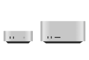
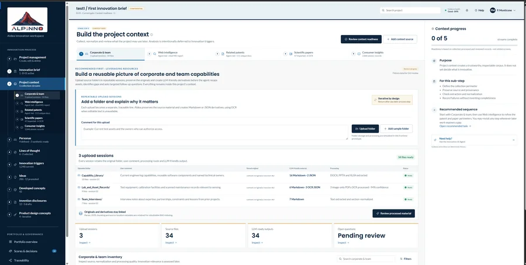
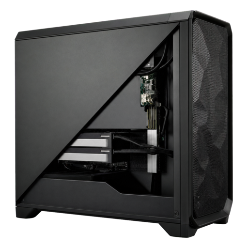

Compact local AI appliance
Private local inference in a compact, dedicated form.
Proprietary ALPINNO technology
AIdea™ guides expert teams through a structured, flexible and iterative innovation workflow. It combines corporate knowledge, AIdea™-curated knowledge and public intelligence, including patents, scientific publications and selected web sources, to create evidence-grounded opportunities, ideas, concepts, inventions and invention disclosures.
A setup phase establishes the innovation brief, data sources, methods and governance. Teams then work through focused innovation sprints, moving iteratively between evidence, exploration, concept development, invention capture and review.
AI assists the process; human experts define, select, refine and approve the inventive contribution.
AIdea™ records decisions, expert contributions, evidence and iterations, preserving traceability from source knowledge to inventive features and final disclosure. Inventorship and patentability remain subject to the applicable jurisdiction and the facts of each invention.
A guided process that adapts as knowledge matures
Teams can move backwards and forwards across phases as evidence, priorities and concepts develop.
Evidence from previous work
These results draw on Pier Paolo's prior innovation work and his experience as a named inventor or co-inventor on 270 patent records.
Tailored to the organisation
AIdea™ provides one guided innovation environment across deployment models selected for the organisation's data sensitivity, security requirements, workload and preferred technology environment.

Private local inference in a compact, dedicated form.
Managed or customer-controlled cloud deployment.


Higher-performance local computing for demanding workloads.
Customer-controlled infrastructure for teams and larger workloads.
ALPINNO-led or customer-operatedUse AIdea™ in an ALPINNO-facilitated engagement or within your own team.
Enabled and supportedSetup, onboarding, methodology training, administration training and ongoing support.
Who you will work with
AIdea™ is ALPINNO’s proprietary innovation and invention platform. Your point of contact is Pier Paolo Monticone, PhD ETH, Founder & Managing Director and former Head of JTI’s AI-assisted innovation lab. Use AIdea™ in an ALPINNO-led project or deploy it for your own team.
Work with ALPINNO
Start with your objectives, your team and the outcomes that matter.